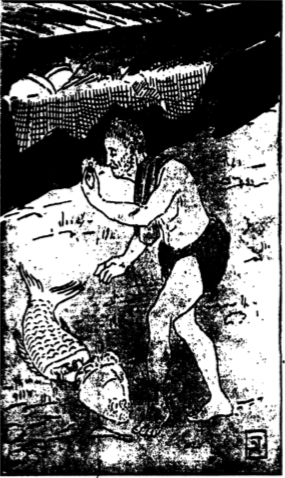

রাজপুরে
দুর্বাসার শাপে রাজা শকুন্তলাকে একেবারে ভুলে বেশ সুখে আছেন। সাত ক্রোশ জুড়ে রাজার সাত মহল বাড়ি, তার এক এক মহলে এক এক রকম কাজ চলছে।
প্রথম মহলে রাজসভা- সেখানে সােনার থামে সােনার ছাদ, তার তলায় সােনার সিংহাসন; সেখানে দোষী-নির্দোষের বিচার চলছে।
তারপর দেবমন্দির- সেখানে সােনার দেয়ালে মানিকের পাখি, মুক্তোর ফল, পান্নার পাতা। মাঝখানে প্রকাণ্ড হােমকুণ্ড, সেখানে দিবারাত্রি হােম হচ্ছে। তারপর অতিথিশালা সেখানে সােনার থালায় দুসন্ধ্যা লক্ষ লক্ষ অতিথি খাচ্ছে।
তারপর নৃত্যশালা-- সেখানে নাচ চলেছে, শানের উপর সােনার নূপুর রুনুঝুনু বাজছে, স্ফটিকের দেয়ালে অঙ্গের ছায়া তালে তালে নাচছে। | সংগীতশালায় গান চলছে, সােনাব পালঙ্কে পৃথিবীর রাজা রাজাদুষ্মন্ত বসে আছেন, দক্ষিণ-দুয়ারি ঘরে দক্ষিণের বাতাস আসছে; শকুন্তলার কথা তার মনেই নেই। হায়, দুর্বাসার শাপে, সুখের অন্তঃপুরে সােনার পালঙ্কে রাজা সব ভুলে রইলেন।
আর শকুন্তলা কত ঝড়বৃষ্টিতে, কত পথ চলে, রাজার কাছে এল, রাজা চিনতেও পারলেন না; বললেন – কন্যে, তুমি কেন এসেছ?
কী চাও? টাকা-কড়ি চাও, না, ঘর-বাড়ি চাও? কী চাও?
শকুন্তলা বললে ‘মহারাজ, আমি টাকা চাই না, কড়িও চাই না, ঘড়-বাড়ি কিছুই চাই না, আমি চাই তােমায়। তুমি আমার রাজা, আমার গলায় মালা দিয়েছ, আমি তােমায় চাই।
রাজা বললেন– “ছি ছি, কন্যে, এ কী কথা! তুমি হলে বনবাসিনী তপস্বিনী, আমি হলেম রাজ্যেশ্বর মহারাজা, আমি তােমায় কেন মালা দেব ? টাকা চাও টাকা নাও, ঘর-বাড়ি চাও তাই নাও, গায়ের গহনা চাও তাও নাও। রাজ্যেশ্বরী হতে চাও- এ কেমন কথা?
রাজার কথায় শকুন্তলার প্রাণ কেঁপে উঠল, কঁদতে কাঁদতে বললে মহারাজ, সে কী কথা! আমি যে সেই শকুন্তলা আমায় ভুলে গেলে? মনে নেই, মহারাজা, সেই মাধবীর বনে একদিন আমরা তিন সখীতে গুগুন্ গল্প করছিলুম, এমন সময় তুমি অতিথি এলে; সখীরা তােমায় পা-ধােবার জল দিলে, আমি আঁচলে ফল এনে দিলেম, তুমি হাসিমুখে তাই খেলে। তারপর একটা পদ্মপাতায় জল নিয়ে আমার হরিণশিশুকে খাওয়াতে গেলে, সে ছুটে পালাল, তুমি কত ডাকলে, কত মিষ্টি কথা বললে কিছুতে এল না। তারপর আমি কতেই আমার কাছে এল, আমার হাতে জল খেল, তুমি আদর করে বললে— দুইজনেই বনের প্রাণী কিনা তাই এত ভাব! শুনে সখীরা হেসে উঠল, আমি লজ্জায় মরে গেলাম। তারপর, মহারাজা, তুমি কতদিন তপস্বীর মতাে সে বনে রইলে। বনের ফল খেয়ে, নদীর জল খেয়ে কতদিন কাটালে। তারপর একদিন পূর্ণিমা রাতে মালিনীর তীরে নিকুঞ্জ বনে আমার কাছে এলে, আমার গলায় মালা দিলে মহারাজ, সে-কথা কি ভুলে গেলে?
যাবার সময় তুমি মহারাজ, আমার হাতে আংটি রয়ে দিলে ; প্রতিদিন তােমার নামের একটি করে অক্ষর পড়তে বলে দিলে, বলে গেলে নামও শেষ হবে আর আমায় নিতে সােনার রথ পাঠাবে। কিন্তু মহারাজ, সােনার রথ কই পাঠালে, সব ভুলে রইলে? মহারাজ, এমনি করে কি কথা রাখলে?
বনবাসিনী শকুন্তলা রাজার কাছে কত অভিমান করলে, রাজাকে কত অনুযােগ করলে, সেই কুঞ্জবনের কথা, সেই দুই সখীর কথা, সেই হরিণশিশুর কথা কত কথাই মনে করিয়ে দিলে, তবু রাজার মনে পড়ল না। শেষে রাজা বললেন- “কই, কন্যা, দেখি তােমার সেই আংটি। তুমি যে বললে আমি তােমায় আংটি দিয়েছি, কই দেখাও দেখি কেমন আংটি ?
শকুন্তলা তাড়াতাড়ি আঁচল খুলে আংটি দেখাতে গেল, কিন্তু হায়, আঁচল শূন্য।
রাজার সেই সাতরাজার ধন এক মানিকের বরণ-আংটি কোথায় গেল!
এতদিনে দুর্বাসার শাপ ফলল। হায়, রাজাও তার পব হলেন, পৃথিবীতে আপনার লােক কেউ রইল না।
‘মা-গঙ্গা !'-বলে শকুন্তলা রাজসভায় শানের উপর ঘুরে পড়ল; তার কপাল ফুটে রক্ত ছুটল, রাজসভায় হাহাকার পড়ে গেল।
সেই সময় শকুন্তলার সেই পাষাণী মা মেনকা স্বর্গপুরে ইন্দ্রসভায় বীণা বাজিয়ে গান গাইছিল। হঠাৎ তার বীণার তার ছিড়ে গেল, গানের সুর হারিয়ে গেল, শকুন্তলার জন্যে প্রাণ কেঁদে উঠল, অমনি সে বিদ্যুতের মতাে মেঘের রথে এসে রাজার সভা থেকে শকুন্তলাকে কোলে তুলে একেবারে হেমকূট পর্বতে নিয়ে গেল।
সেই হেমকূট পর্বতে কশ্যপের আশ্রমে স্বর্গের অঙ্গবাদের মাঝে কতদিনে শকুন্তলার একটি রাজচক্রবর্তী রাজকুমার হল।
সেই কেলি-ভরা ছেলে পেয়ে শকুন্তলার বুক জুড়ল।
শকুন্তলা তাে চলে গেল। এদিকে রাজবাড়ির জেলেরা একদিন শচীতীর্থের জলে জাল ফেলতে আরম্ভ করলে। রূপপালি রঙের সরলপুটি, চাঁদের মতাে পায়রা-চাদা, সাপের মতাে বণিমাই, দাড়াওয়ালা চিংড়ি, কঁঠা-ভরা বাটা কত কী জালে পড়ল। সােনালি রূপােলি মাছে নদীর পাড় মাছের ঝুড়ি য়েন সােনায় রূপােয় ভরে গেল। সারাদিন জেলেদের জালে কত রকমের কত যে মাছ পড়ল তার আর ঠিকানা নেই। শেষে ক্রমে বেলা পড়ে এল; নীল আকাশ, নদীর জল, নগরের পথ আঁধার হয়ে এল; জাল গুটিয়ে জেলেরা ঘরে চলল।
এমন সময় এক জেলে জাল ঘাড়ে নদীতীরে দেখা দিল। প্রকাণ্ড জালখানা মাথার উপর ঘুরিয়ে নদীর উপর উড়িয়ে দিলে; মেঘের মতাে কালাে জাল আকাশে ঘুরে, নদীর এপার ওপার দু-পার জুড়ে জলে পড়ল। সেই সময় মাছের সর্দার, নদীর রাজা, বুড়াে মাছ রুই অন্ধকারে সন্ধ্যার সময় সেই নদী-ঘেরা কালাে জালে ধরা পড়ল। জেলে পাড়ায় রব উঠল— জাল কাটবার গুরু, মাছের সর্দার, বুড়াে রুই এতদিনে জালে পড়েছে। যে যেখানে ছিল নদীতীরে ছুটে এল। তারপর অনেক কষ্টে মাছ ডাঙায় উঠল। এত বড়াে মাছ কেউ কখনাে দেখেনি। আবার যখন সেই মাছের পেট চিরতে সাতরাজার ধন এক মানিকের আংটি জ্বলন্ত আগুনের মতাে ঠিকরে পড়ল তখন সবাই অবাক হয়ে রইল। যার মাছ ৩ার আনন্দের সীমা রইল না।
গরিব জেলে যেন আকাশের চাঁদ হাতে পেলে। মাছের ঝুড়ি, ছেড়া জাল জলে ফেলে মানিকের আংটি সেকরার দোকানে বেচতে চলল। রাজ শকুন্তলাকে যে-আংটি দিয়েছিলেন— এ সেই আংটি। শচীতীর্থে গা-ধােবার সময় তার আঁচল থেকে যখন জলে পড়ে যায় তখন রুইমাছটা খাবার ভেবে গিলে ফেলেছিল।
জেলের হাতে রাজার মােহর আংটি দেখে সেকরা কোটালকে খবর দিলে। কোটাল জেলেকে মারতে মারতে রাজসভায় হাজির করলে। বেচারা জেলে রাজদরবারে দাড়িয়ে কাপতে কাপতে কেমন করে মাছের পেটে আংটি পেয়েছে নিবেদন করলে।
রাজমন্ত্রী দেখলেন সত্যিই আংটিতে মাছের গন্ধ। জেলে ছাড়া পেয়ে মােহরের তােড়া বখশিশ নিয়ে নাচতে নাচতে বাড়ি গেল।
এদিকে আংটি হাতে পড়তেই রাজার তপােবনের কথা সব মনে পড়ে গেল।
শকুন্তলার শােকে রাজা যেন পাগল হয়ে উঠলেন। বিনা দোষে তাকে দূর করে দিয়ে প্রাণ যেন তুষের আগুনে পুড়তে লাগল। মুখে অন্য কথা নেই, কেবল—‘হা শকুন্তলা!-- হা শকুন্তলা!
আহারে, বিহারে, শয়নে, স্বপনে, কিছুতে সুখ নেই; রাজকার্যে সুখ নেই, অন্তঃপুরে সুখ নেই, উপবনে সুখ নেই কোথাও মুখ নেই।
সংগীতশালায় গান বন্ধ হল, নৃত্যশালায় নাচ বন্ধ হল, উপবনে উৎসব বন্ধ হল।
রাজার দুঃখের সীমা রইল না।
একদিকে বনবাসিনী শকুন্তলা কোলভরা ছেলে নিয়ে হেমকূটের সােনার শিখরে বসে রইল, আর একদিকে জগতের রাজা, রাজাদুষ্মন্ত জগৎজোড়া শােক নিয়ে ধূলায় ধূসর পড়ে রইলেন।
কতদিন পরে দেবতার কৃপা হল।
স্বর্গ থেকে ইন্দ্রদেবের রথ এসে রাজাকে দৈত্যদের সঙ্গে যুদ্ধ করবার জন্যে স্বর্গপুরে নিয়ে গেল। সেখানে নন্দনবনে কত দিন কাটিয়ে দৈত্যদের সঙ্গে কত যুদ্ধ করে, মায়ের মালা গলায় পবে, রাজা রাজ্যে ফিরছেন— এমন সময় দেখলেন, পথে হেমকূট পর্বত, মহর্ষি কশ্যপের আশ্রম। রাজা মহর্ষিকে প্রণাম করবার জন্য সেই আশ্রমে চললেন।
এই আশ্রমে অনেক তাপস, অনেক তপস্বিনী থাকতেন, অনেক অপ্সর, অনেক অপ্সরা থাকত। আর থাকত শকুন্তলা আব তাব পুত্র রাজপুত্র সর্বদমন।
রাজা দুষ্মন্ত যেমন দেশের রাজা ছিলেন তার সেই রাজপুত্র তেমনি বনের রাজা ছিল। বনের যত জীবজন্তু তাকে বড়োই ভালােবাসত।
সেই বনে সাত ক্রোশ জুড়ে একটা প্রকাণ্ড কটগাছ ছিল, তার তলায় একটা কাণ্ড অজগর দিনরাত্রি পড়ে থাকত। এই গাছতলায় সর্বদমনের রাজসভা বসত।
হাতিরা তাকে মাথায় করে নদীতে নিয়ে যেত, গুঁড়ে করে জল ছিটিয়ে গা ধুইয়ে দিত, তারপর তাকে সেই সাপের পিঠে বসিয়ে দিত -এই তার রাজসিংহাসন। দুদিকে দুই হাতি পদ্মফুলের চামর দোলাত, অজগর ফণা মেলে মাথায় ছাতা ধরত। ভালুক ছি মন্ত্রী, সিংহ ছিল সেনাপতি, বাঘ চৌকিদার, শেয়াল ছিল কোটাল আর ছিল—শুক-পাখি তার প্রিয়সখা, কত মজার মজার কথা বলা দেশ-বিদেশের গল্প করত। সে পাখির বাসায় পাখির ছানা নি খেলা করত, বাঘের বাসায় বাঘের কাছে বসে থাকত— কেউ তার কিছু বলত না। সবাই তাকে ভয়ও করত, ভালােও বাসত।
রাজা যখন সেই বনে এলেন তখন রাজপুত্র একটা সিংহশিশুকে নিয়ে খেলা করছিল, তার মুখে হাত পুবে দাত গুনছিল, তাবে কোলে পিঠে করছিল, তাব জটা ধরে টানছিল। বনের তপস্বিনীর কত ছেড়ে দিতে বলছিলেন, কত মাটির ময়ুরের লােভ দেখাচ্ছিলেন, শিশু কিছুতেই শুনছিল না।
এমন সময় রাজ। সেখানে এলেন, সিংহশিশুকে ছাড়িয়ে সেই বাজশিশুকে কোলে নিলেন; দুষ্ট শিশু রাজার কোলে শান্ত হল।
সেই রাজশিশুকে কোলে করে রাজার বুক যেন জুছিয়ে গেল। রাজা তো জানেন না যে এ শিশু 'বই পুত্র। ভাবছেন— পারের ছেলেকে কোলে কবে মন কেন এমন হল, ব উপর কেন এত মায়া হল?
এমন সময় শকুন্তলা অঞ্চলের নিধি কে'লে বাছাকে খুজতে খুজাত সেইখানে এলেন।
রাজারানীতে দেখা হল, রাজা আবাব শকুন্তলাকে আদর করলেন, তঁাব কাছে ক্ষমা চাইলেন। দেবতার কৃপায় এতদিনে আবার মিলন হল, দুবাসার শাপান্ত হল। কশ্যপ অদিতিকে প্রণাম করে রাজারানী রাজপুত্র কোলে রাজ্যে ফিবলেন।
তাৰপর কতদিন মুখে বাজত্ব কবে, বাজপুত্রকে রাজ্য দিয়ে, রাজারানী সেই তপােবনে তাত কণেৰ কাছে, সেই দুই সখীর কাছে, সেই হরিণশিশুর কাছে, সেই সহকার এবং মাধবীলতাব কাছে ফিরে গেলেন এবং তাপস তাপসীদের সঙ্গে সুখে জীবন কাটিয়ে দিলেন।